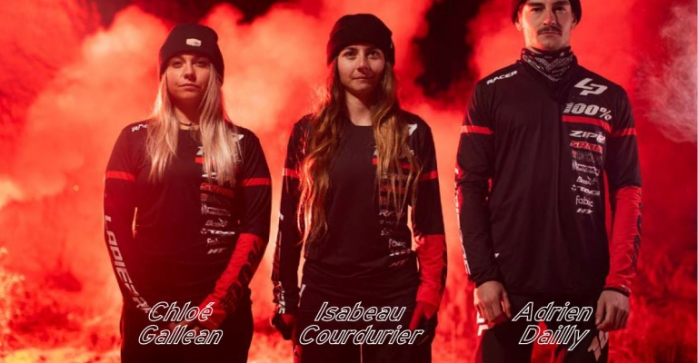
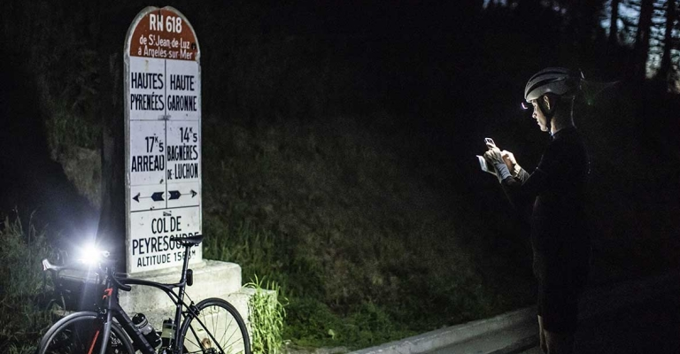

-
 WE ARE BACK ZIPP, ZIPP LAPIERRE COLLECTIVE
Lapierre is back in the game with a new enduro dream team
 WE HAVE NEVER BEEN SO FAR... “THE ASSASSINS STAGE”
May 1910. Two months before the start of the 8thedition of the Tour de France, Alphonse Steines drove his car to the foot of the Col du Tourmalet in the Pyrenees. He was a journalist at L'Auto and was responsible for planning the route for the Tour de France. For quite some time, he’d had just one idea in mind: he wanted to find out if it was possible for the riders in the next edition to enter the Pyrenees for the first time. No one had ever dared to try this before.

KEEP THE ESSENTIALS, ELIMINATE THE SUPERFLUOUS
Since its creation in 2013, our Xelius has never stopped evolving, becoming the flagship model of our road bike range. This is a bike capable of being champion of France several times in the sprint or winning mountain stages in the hands of the best riders. We have nourished ourselves on this DNA to design and improve this new version. While maintaining its iconic design, we have worked in the minutest detail so that it can better support riders on every demanding course.